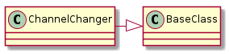

Since the commands have been broken down to do only one thing each (discounting the undo methods) in order to get more complex actions they need to be aggregated into what I’m loosely calling macros (the original intent was to use the Macro Pattern, but that isn’t working out at the moment).

ChannelChanger(connection) |
A channel changer for the broadcom |
ChannelChanger.enable_command |
An EnableInterface command (without the band set) |
ChannelChanger.disable_command |
A DisableInterface command (without the band set) |
ChannelChanger.set_channel_command |
A SetChannel command |
ChannelChanger.set_sideband_command |
A SetSideband command (defaulted ‘lower’) |
ChannelChanger.undo() |
right now just undoes the channel as disable/enable might be called elsewhere |
ChannelChanger.__call__(channel) |
The main interface – enables the Wireless interface and sets the channel |